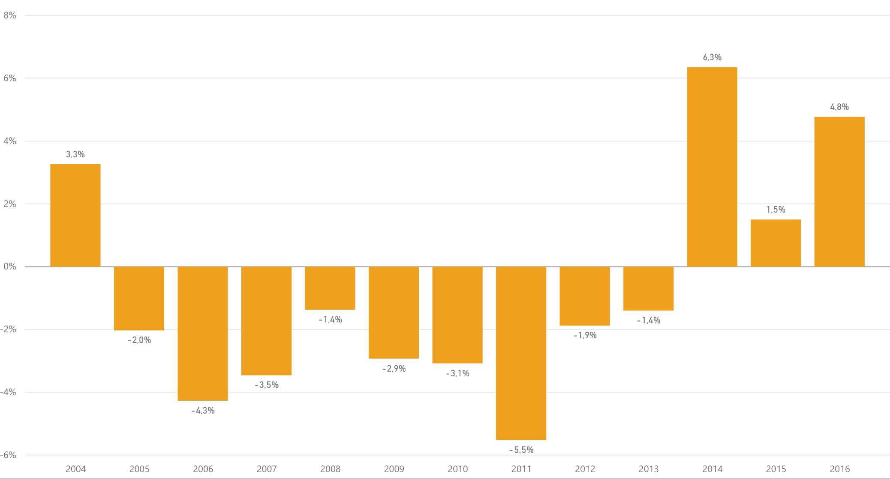

Jäsenistö
Suomen Partiolaisten jäsenet

Jäsenmäärän muutos edellisvuoteen verrattuna:
Jäsenmaksun maksaneet jäsenet
Jäsenmaksun maksaneiden muutos edellisiin vuosiin.

Rekisteriin kirjatut jäsenet
Kirjattujen jäsenten muutos edellisiin vuosiin.
Ikäryhmät
Ikäkausien suhteelliset osuudet 31.7.2016
Ikäkausien suhteellisten osuuksien muutos
Kohderyhmäikäisten ikäjakauma
Partiorekisteriin kirjattujen 7-22-vuotiaiden ikäjakauma 31.7. sukupuolittain
Sukupuolijako
Sukupuolien suhteellinen osuus ikäkausista
Jäsenien jakautuminen ikäkausiin sukupuolittain
Sukupuolien osuudet ikäkauden liittyneistä
Sukupuolien osuudet ikäkauden eronneista
Liittyneet ja eronneet
Liittyneet ja eronneet vuosittain
Liittyneet ja eronneet ikäryhmittäin 2016
Ikäkausien osuudet liittyneistä ja eronneista
Liittyneet ja eronneet 2016 piireittäin verrattuna piirin jäsenmäärään 31.12.2016

Koulutus
Ryhmien aikuisen tuen koulutus

Partiomenetelmän osa-alueet
Partiolaisten ikä eri ikäkausissa
Ryhmien aikuinen tuki
Kohderyhmäikäisten johtajatehtävät
Vartiotoiminta
Partio-ohjelma
Partio-ohjelman toteutumista eritavoilla vuosiselosteessa. Alla on kuvattu suoritetun partio-ohjelman volyymeja ikäkausittain ja lippukuntien arvio samoaja ja vaeltaja ohjelmien toteutumisesta. Datassa on listattu erikseen sekä uusi että vanha samoaja ja vaeltajaohjelma.
Raportin kohdassa partio-ohjelman kasvatus tavoitteet on lippukunnat arvioineet partiolaisten kehittymistä oman ikäkauden kasvatustavoitteissa. Yleisenä trendinä voidaan huomata ettei ikäkausien ohjelma suoritusten trendit täyty.
Sudenpentuohjelma
Tehdyt jäljet 2016
Jälkeä per sudenpentu vuosittain
Sudenpennuilla on partio-ohjelmassa 35 jälkeä. Kaikkia jälkiä tehtiin vuonna 2015. Suosituimmat jäljet ovat vuodesta toiseen samoja perinteisiä partiotaitoja. Vähiten suosittuja jälkiä ovat meripartiointiin liittyvät jäljet, mikä luultavasti johtuu meripartiolippukuntien suhteellisen vähäisestä määrästä ja maapartiolaisten vähistä mahdollisuuksista tehdä meripartiojälkiä.
Muutokset aiempiin vuosiin ovat pieniä. Vuoteen 2015 verrattuna eniten suosiotaan ovat kasvattaneet Ensiapu, Luonnossaliikkuja sekä luonnontuntemus. Toiseen suuntaan erottuvat Retki ja Taiteilija joita on tehty huomattavasti vähemmän vuoteen 2015 verrattuna . Maailma jälki on menettänyt suosiotaan toista vuotta putkeen.